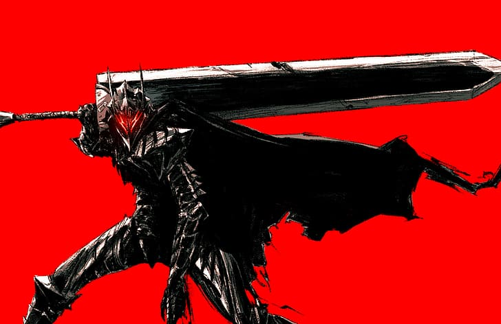

Guts and Glory: The Definitive Berserk Experience
"Berserk: A masterpiece of dark fantasy, weaving a tale of relentless struggle, extraordinary artistry, and unforgettable characters. Explore the depths of its captivating story and be forever captivated."
